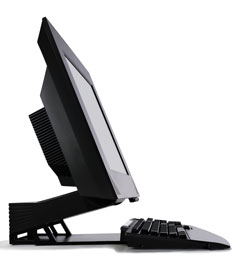
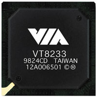
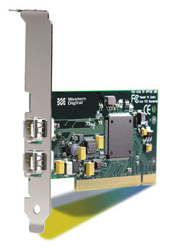
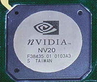
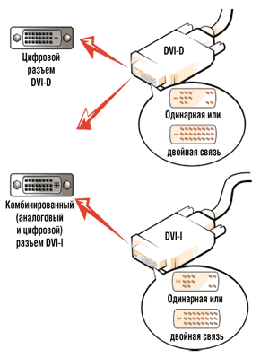

Андрей Борзенко
Любая новая технология в какой-то момент устаревает. Многие используемые до сих пор традиционные технологии, включая компьютерные шины, интерфейсы, периферийные устройства и порты ввода-вывода, были разработаны на заре эры ПК и не смогли эволюционировать в степени, достаточной для того, чтобы соответствовать сегодняшним более производительным и управляемым архитектурам. Такие инициативы, как NetPC, Easy PC, Legacy-Free Hardware, BIOS Requirements, а также рекомендации PC System Design Guide для проектирования ПК, выработанные в основном корпорациями Intel и Microsoft, помогли заложить основу для освобождения на ПК-платформах от так называемых унаследованных (legacy) технологий. Целью этих инициатив было усовершенствование архитектуры ПК, чтобы повышение производительности системы, ее управляемости и стабильности ПО более не связывались необходимостью поддержки устаревших технологий аппаратного и программного обеспечения. Компьютеры со сниженным количеством унаследованных технологий часто называют legacy-reduced, а системы, отвечающие требованиям рекомендаций на проектирование, изложенным в документе PC 2001 System Design Guide, - legacy-free. Отметим, что работа над рекомендациями PC 2001 началась еще в 1999 г. на Форуме Intel для разработчиков.
Унаследованные технологии
Итак, сегодня компьютерная отрасль находится в процессе перехода от некоторых устаревших, недостаточно управляемых шин и портов, которые имеются во многих сегодняшних ПК, к более современным технологиям (табл. 1). В частности, в настоящее время активно идет процесс освобождения от шины ISA (Industry Standard Architecture) и портов ввода-вывода на ее основе, а в будущем, вероятно, произойдет полная замена интерфейсов ATA (Parallel Advanced Technology Attachment) и VGA (Video Graphics Array). Изготовители компьютерного оборудования уже заменяют интерфейсы на основе ISA на интерфейсы универсальной последовательной шины (Universal System Bus, USB) и высокопроизводительной последовательной шины IEEE 1394 (FireWire). Ожидается, что предложенный последовательный интерфейс (Serial ATA) со временем заменит используемый сейчас параллельный ATA-интерфейс, а технология цифрового визуального интерфейса (Digital Visual Interface) вытеснит интерфейс VGA.
Отход от традиционных технологий, включая шину ISA и основанные на ней последовательные и параллельные порты, разъемы PS/2 и приводы гибких дисков, выгоден как пользователям ПК, так и изготовителям компьютеров. В отсутствие этих устаревших компонентов должна упроститься настройка компьютерных систем (как первоначальная, так и при последующем их расширении). Кроме того, новые внешние устройства разрабатываются как самонастраиваемые и с возможностью "горячего" подключения, что устраняет аппаратные конфликты, улучшая управляемость и облегчая поддержку системы, а также увеличивая совместимость аппаратных и программных средств различных поставщиков.
|  | Компьютер IBM NetVista X Series использует все современные технологии.
|
Однако, как при любых значительных технологических изменениях, при переходе на новую архитектуру следует иметь в виду и возможные компромиссы. В зависимости от возможностей производителя конкретного ПК новые компьютеры, свободные от устаревших технологий, могут не поддерживать какие-то типы подключаемых устройств, имеющихся у пользователя, таких, как принтеры, сканеры, ручные устройства, и некоторые типы используемых в настоящее время операционных систем.
Таблица 1. Эволюция интерфейсов
| Тип устройства | Новый интерфейс | Причины миграции |
| Шина ISA Порт PS/2 Последовательный порт Параллельный порт |
Шина PCI Порт USB Порт USB Порт USB, IEEE 1394 |
Управляемость, скорость Управляемость Управляемость, скорость Управляемость, скорость |
| Параллельный ATA | Последовательный ATA | Скорость и расширяемость |
| VGA | DVI | Разрешение и качество изображения |
Забудьте про ISA
Архитектура шинного интерфейса ISA, разработанная в 1981 г. для персонального компьютера IBM XT (eXtended Technology), была сертифицирована в качестве промышленного стандарта в 1984 г. американским институтом IEEE (Institute of Electrical and Electronic Engineers). Стоит отметить, что архитектура ISA - одна из старейших унаследованных технологий для ПК. Сегодня отказ от шины ISA уже почти завершен, но во времена, когда она была стандартом для каждого ПК, на ней размещались гнезда для подключения практически всех плат расширения (сетевые и звуковые карты и т. д.). Кроме того, ISA поддерживала ряд интерфейсов ввода-вывода (порты PS/2 для мыши и клавиатуры, параллельный и последовательные порты, игровой порт, инфракрасный порт, интерфейс для поддержки дисководов гибких дисков).
Компьютерная отрасль начала миграцию с шины ISA и поддерживаемых ею портов более двух лет назад, что было обусловлено рядом ограничений и проблем совместимости, свойственных архитектуре ISA. Дело в том, что эта архитектура обеспечивала только 15 линий, не разделяемых в общем случае аппаратных прерываний (IRQ), 7 каналов прямого доступа к памяти (DMA) и адресное пространство в 16 Мбайт. Эти ограничения значительно сужали число периферийных устройств, которые могли быть присоединены к компьютеру. Кроме того, для интерфейса ISA требовалось большое число контактов (98), поэтому разъемы для этой шины занимали много места на системной плате. Максимальная пропускная способность шины ISA (8,3 Мбайт/с) была узким местом, в значительной степени ограничивающим общую пропускную способность системы. К тому же активность на шине ISA негативно влияла на работу шины PCI (Peripheral Component Interconnect). Ограниченные возможности автоматического конфигурирования и отсутствие поддержки стандарта Plug and Play затрудняли добавление и настройку дополнительных устройств. Здесь же стоит отметить, что шина ISA не поддерживала режимы управления питанием, а проблемы конфигурирования периферийных устройств для шины ISA и традиционных портов (последовательные и параллельные порты, порты клавиатуры и мыши, интерфейс дисководов флоппи-дисков) могли приводить к дополнительным затратам на поддержку систем.
Чтобы обеспечить упорядоченную миграцию от архитектуры ISA на новые технологии, были приняты специальные меры. В частности, еще рекомендации PC 98 не позволяли использовать встроенные ISA-устройства (за исключением звуковых подсистем и модема) в ПК, которые получили сертификат соответствия после июля 1998 г., а для компьютеров, сертифицированных после января 1999 г., предписывалось исключение всех встроенных ISA-устройств. В рекомендациях PC 99 предписывалось исключить встроенные ISA-устройства, гнезда расширения и платы ISA для стандартных конфигураций ПК, получающих сертификат соответствия после выхода в свет этого документа 1 июля 1999 г. (позже эта дата была отодвинута на 1 января 2000 г.).
Хотя поддержка шины ISA отраслью заметно уменьшилась, она не отменена полностью. По мнению экспертов, некоторые специализированные деловые приложения будут требовать поддержки ISA еще в течение нескольких лет. А дело тут в следующем. Несмотря на большое число аргументов в пользу отказа от шины ISA и основанных на ней унаследованных портов ввода-вывода, у пользователей имеется множество серьезных причин желать, чтобы производители продолжали поддерживать эту шину, по крайней мере в некоторых специализированных, заказных конфигурациях компьютеров. Одна из наиболее значимых причин - стремление защитить капиталовложения заказчиков в используемые по сей день устройства, оборудованные последовательными и параллельными портами, и другие периферийные устройства, требующие функциональности архитектуры ISA. Например, есть довольно много ПК, где требуется последовательный порт RS-232 для обеспечения коммуникаций на расстояниях, на которых применение USB или IEEE 1394 неэффективно. В этих ситуациях можно использовать порты RS-232 на платах расширения для шины PCI, при этом обычно такие платы портов не считаются унаследованным оборудованием.
Несколько независимых поставщиков аппаратного и программного обеспечения все еще продолжают выпускать платы и ПО для шины ISA. В прошлом периферийные устройства для шины ISA были значительно дешевле аналогичных плат, предназначенных для шин PCI, USB или IEEE 1394. Однако по мере появления все большего числа периферии, разработанной для этих новых шин, ситуация будет меняться.
Для поддержки пользователей архитектуры ISA имеется и ряд промежуточных решений. Стандартная конфигурация компьютера, сертифицированного на соответствие рекомендациям Microsoft PC Design Guide после января 2000 г., не может содержать гнезда ISA, однако изготовители могут по специальной просьбе заказчика реализовать их поддержку. Возможна, например, конфигурация, использующая мост между шинами PCI и ISA на основе специальных переходных плат - райзер-карт. Обеспечение поддержки ISA через мост PCI-ISA на основе переходной платы позволяет изготовителям использовать легкодоступные, недорогие компоненты. Однако у этого решения имеется один недостаток - устройства на шине ISA используют часть полосы пропускания шины PCI, что может негативно сказаться на производительности всей системы.
Интерфейс USB
После разработки и внедрения шины PCI платы расширения на ее основе стали постепенно вытеснять аналогичные платы для шины ISA, а внешние устройства, работающие через интерфейс USB или IEEE 1394, заменяли устройства с портами архитектуры ISA. USB - это архитектура последовательной шины, которая поддерживает "горячее" подключение, динамическое конфигурирование устройств, обеспечивает поддержку изохронности (в первую очередь на компьютерах, работающих под управлением новых ОС) и поддержку скоростей передачи данных от 1,5 и 12 Mбит/с (для стандарта USB 1.1) до 480 Мбит/с (для стандарта USB 2.0). Сведения о поддержке этого интерфейса различными ОС приведены в табл. 2.
Спецификации USB 1.1 обеспечивают полосу пропускания, достаточную для поддержки таких устройств, как мышь, клавиатура, модемы, порты ISDN, и узкополосного видео, создаваемого приложениями видеоконференций.
Более скоростная версия стандарта USB 2.0, для которой уже существует ряд продуктов, способна обеспечить поддержку видеокамер с более высокими скоростями потоков данных, сканеров высокого разрешения и передачи многоканального цифрового звука. Эта версия также обеспечивает полную обратную совместимость с версией USB 1.1. В частности, можно использовать периферийные устройства и кабели USB 1.1 без ухудшения рабочих параметров. Шина USB обеспечивает базовые функции управления и возможности конфигурирования, а также определяет классы устройств, которые далее могут задавать требования и настройки, специфичные для представляемой ими технологии.
Кабели USB, которые могут быть длиной до 5 м, имеют два проводника для дифференциальных данных и два проводника, обеспечивающих питание (5 В, до 500 мА) и заземление подключаемых внешних устройств.
Многоярусная звездообразная топология с концентраторами в центре каждой звезды, используемая для соединения устройств USB, поддерживает до 127 устройств, подключенных к одному порту основной системы. В этой топологии каждая ветвь представляет собой соединение типа "точка-точка" между устройствами следующих типов:
- корневым разветвителем и концентратором;
- корневым разветвителем и периферией;
- концентраторами;
- концентратором и периферией.
Концентратор USB питается от основного компьютера (питание от линии), а в особых случаях может питаться от сетевого адаптера (автономное питание). Каждый USB-концентратор обеспечивает функции контроллера и повторителя. Контроллер выполняет функции нумератора, заключающиеся в передаче первичному контроллеру (хосту) конфигурационной информации и сведений о состоянии каждого из портов концентратора, а также в управлении портами по командам, поступающим от хоста.
Повторитель - это управляемый протоколом переключатель, обеспечивающий соединение между портами располагающихся выше и ниже уровней. Повторитель отвечает за обнаружение и обработку ошибок на шине, а также проверяет статус каждого порта концентратора - подключен или отключен. Эти специфичные для каждого концентратора команды управления и контроля статуса позволяют основной системе дистанционно конфигурировать подключенные концентраторы.
Шина USB - дешевый способ установления надежного, управляемого соединения для большого числа устройств на шине. Она обеспечивает обработку ошибок, выполнение процедур восстановления и предоставляет гарантированную полосу пропускания при изохронном обмене данными.
|  | "Южный" мост VIA VT8233 поддерживает шесть USB-портов.
|
USB-мэппер (преобразователь портов) представляет собой устройство, у которого есть один порт USB, а второй обеспечивает подключение наследованных устройств. Например, при помощи такого устройства отображения параллельный порт принтера можно соединить с интерфейсом USB. Обычно преобразователь портов реализуется в виде внешнего модуля, хотя подобную функциональность можно также реализовать либо в самом ПК, либо встроить в периферийное устройство с портом USB.
В случае интерфейса между флоппи-дисководом и шиной USB устройство отображения может интегрироваться в электронные цепи самого дисковода. Внешние конверторы портов могут быть удобны в организациях, где все сотрудники используют системы, свободные от унаследованных технологий, но при этом бывают вынуждены в некоторых случаях подключать к своим системам устаревшие периферийные устройства. При работе с внешними переходными устройствами бывают ситуации, когда не все возможности унаследованных портов могут быть задействованы в полном объеме.
Стандарт USB полностью совместим с архитектурой Plug and Play и позволяет добавлять или отключать устройства от шины, не выключая их питание или питание основной системы. В настоящее время наборы микросхем с интегрированной поддержкой USB распространены довольно широко.
Таблица 2. Поддержка USB и IEEE 1394 на уровне ОС
| ОС | Поддержка нового интерфейса |
| Microsoft Windows 98 | USB: интерфейс с пользователем, звуковые устройства, хост-контроллеры 1394: хост-контроллеры, устройства хранения, сканеры |
| Microsoft Windows 98 SE | USB: интерфейс с пользователем, звуковые устройства, устройства
хранения, модем, игровой контроллер 1394: хост-контроллеры, отсек накопителей, жесткий диск, привод CD-ROM, сканеры |
| Microsoft Windows Millennium | USB: интерфейс с пользователем, звуковые устройства, хост-контроллеры,
модем, игровой контроллер, устройства хранения, камеры и сканеры, клавиатура
и мышь 1394: хост-контроллеры, отсеки для периферийных устройств, накопители, цифровые видеокамеры и сканеры, цифровые звуковые устройства |
| Microsoft Windows 2000 | USB: интерфейс с пользователем, звуковые устройства, хост-контроллеры,
модем, игровой контроллер, камеры и сканеры, клавиатура и мышь, накопители,
принтеры, источники бесперебойного питания (ИБП) 1394: хост-контроллеры, отсеки для периферийных устройств, накопители, цифровые видеокамеры и сканеры, цифровые звуковые устройства |
Интерфейс IEEE1394
Сертифицированный американским институтом IEEE стандарт на высокоскоростную последовательную шину - IEEE 1394 позволяет реализовать независимый, равноправный обмен данными между периферийными устройствами. Спецификации данного стандарта определяют скорости передачи данных в 100, 200 и 400 Мбит/с, а более современные спецификации (IEEE1394b) расширяют верхний предел скорости передачи до 3,2 Гбит/ с при полной обратной совместимости с текущими спецификациями. Устройства, отвечающие стандарту 1394, могут находиться как внутри ПК, так и подключаться к нему извне.
В настоящее время порты IEEE 1394 реализуются на основе адаптеров PCI-IEEE 1394 и CardBus-IEEE 1394, однако ожидается, что изготовители наборов микросхем обеспечат поддержку IEEE 1394 прямо в своих чипсетах. Переход к поддержке функциональности IEEE 1394 на уровне системных микросхем позволит "развязать" шину IEEE 1394 и шину PCI, что обеспечит более прямой путь данных из порта IEEE 1394 в системную память и благотворно скажется на общем быстродействии.
|  | PCI-адаптер для интерфейса IEEE1394.
|
Каждая шина IEEE 1394 может поддерживать работу до 63 узлов. Узлы соединяются с использованием кабелей IEEE 1394 длиной до 4,5 м в разветвляющейся сетевой топологии. При использовании оптоволоконного кабеля устройства, удовлетворяющие спецификациям 1394b, могут работать на расстояниях до 100 м. В такой сети промежуточный узел ветви - это проходное устройство со входящими и исходящими кабелями, а краевой узел - оконечное устройство с единственным подключением. Промежуточные узлы могут получать и передавать данные, а также работать в качестве повторителей для поддержания двунаправленного трафика на шине. Краевые узлы получают и передают данные, но не работают в режиме повторителей. Между любыми двумя узлами сети должно быть не более 16 стандартных длин кабелей (примерно 70 м). Экранированные кабели IEEE 1394 содержат две сигнальные пары (одна для данных, другая для стробирующего сигнала) и пару проводников питания. Питающие проводники могут пропускать постоянный ток до 1,5 А при напряжении от 8 до 40 В для питания неавтономных узлов или для поддержания их работы в качестве повторителей при выключении автономного сетевого питания.
Передача данных по шине IEEE 1394 может быть как асинхронной, так и изохронной. Асинхронный режим поддерживает повторную пересылку недостающих или утраченных данных, а изохронный режим гарантирует доставку данных в пределах заданного временного окна, но не обеспечивает коррекции ошибок или повторной передачи.
Именно изохронный режим и достигаемые при этом скорости передачи данных делают шину IEEE 1394 идеальным решением для мультимедийных приложений, когда для поддержания синхронности звуковые и видеоданные должны доставляться с минимальным рассогласованием во времени.
В каждом узле реализован физический уровень, состоящий из цепей трансивера для преобразования последовательных данных в соответствии с протоколом шины IEEE 1394. В задачу этого преобразования входит арбитрирование данных, кодирование, декодирование, определение скорости сигнала, восстановление временных интервалов и генерирование опорной частоты.
Основные преимущества стандарта IEEE 1394 над существующими шинами соединения внешних устройств, такими как последовательный и параллельный порты, заключаются в простоте и высокой скорости. Все устройства IEEE 1394 - это устройства с "горячим" подключением и могут добавляться в сеть и изыматься из нее без отключения питания самого устройства или основного компьютера; при этом не требуется конфигурирования вручную, идентификация и настройка параметров выполняются программно, без вмешательства пользователя. Кроме того, IEEE 1394 поддерживает работу с равноправными узлами, обеспечивая реализацию специальных сетей и связь между устройствами без участия компьютера. Например, можно подключить цифровую записывающую видеокамеру непосредственно к видеомагнитофону или жесткому диску.
ATA: от параллельного к последовательному
Спустя почти два десятилетия верной службы параллельный ATA-интерфейс, использующийся в жестких дисках, уступает дорогу более быстродействующему и надежному последовательному интерфейсу, спецификации которого в настоящее время разрабатываются в рабочей группе Serial ATA Working Group.
В сравнении с параллельным последовательный ATA-интерфейс будет иметь пониженные напряжения сигналов, меньшее число контактов разъема и более компактный кабель, что приведет к экономии потребляемой мощности и повышению надежности соединителей. Последовательный ATA-интерфейс также будет полностью совместим со своим параллельным предшественником на программном уровне.
Как и шина ISA, параллельный ATA-интерфейс с момента своего появления в 80-х гг. прошлого века доминировал среди протоколов интерфейса накопителей для настольных и переносных ПК. Причина долговечности этого интерфейса - его низкая стоимость и регулярные усовершенствования, позволявшие повысить скорости обмена данными и улучшить характеристики в целом. Так, скорость передачи данных, определяемая интерфейсом ATA, постоянно увеличивалась: от начальных 3 Мбайт/с до сегодняшних спецификаций Ultra ATA-100, предусматривающих максимальную скорость передачи в пакетном режиме до 100 Мбайт/с. Другим эволюционным усовершенствованием стало расширение ATAPI (улучшенный пакетный интерфейс периферийных устройств), которое было добавлено в протокол ATA-интерфейса для поддержки иных типов носителей, подключаемых к шине ATA.
Несмотря на многолетнее успешное использование, параллельный ATA-интерфейс страдал от ряда ограничений, которые будут преодолены в спецификациях интерфейса последовательного. Перечислим основные из них.
- Требование использования сигнальных линий с уровнем напряжения 5 В - преобладающая в отрасли тенденция к снижению базового напряжения питания компонентов компьютера будет вступать во все большее противоречие с требованием использования 5-вольтовых сигнальных линий.
- Большое число контактов (кабельные разъемы с 40 контактами) - интерфейс предусматривает использование 26 пятивольтовых сигналов на каждый ATA-канал, что требует крупногабаритных плат для размещения разъемов со столь большим числом контактов.
- Ограничение на длину кабеля - для параллельного ATA-интерфейса она не должна превышать 18 дюймов (примерно 46 см), что ограничивает возможности расширения и даже исключает некоторые конфигурации.
- Ширина кабеля и проблемы с его прокладкой - широкие, плоские кабели параллельного интерфейса неудобно размещать в корпусе компьютера, кроме того, они могут создавать препятствия для потоков воздуха, что приводит к появлению внутри шасси зон перегрева ("горячих" точек).
- Проблемы целостности данных - на момент появления спецификаций параллельного АТА-интерфейса в нем не было предусмотрено никаких средств проверки данных. Эта ситуация в некоторой степени была исправлена введением проверки данных с помощью циклического избыточного кода (CRC), но команды управления интерфейса ATA не проверяются на целостность и до сих пор остаются потенциальным источником ошибок.
Последовательный ATA-интерфейс призван снять ограничения, присущие спецификациям параллельного, и в течение нескольких лет вытеснить его с рынка. Общность этих двух архитектур должна послужить залогом плавности перехода к новой технологии.
Последовательный ATA-интерфейс затрагивает только физический уровень реализации и обеспечивает совместимость с параллельным интерфейсом на уровне регистров и ПО. При этом не потребуется вносить какие-либо изменения в драйверы, а сама архитектура последовательного ATA прозрачна для BIOS и операционной системы.
Последовательный интерфейс обеспечивает ряд усовершенствований, в число которых входят:
- снижение напряжения - низкие напряжения на сигнальных линиях, определяемые в спецификациях последовательного ATA-интерфейса (двойная амплитуда 500 мВ), снимают остроту проблемы с поддержкой 5-вольтовых уровней в современных системах;
- минимальное число контактов и малые физические размеры разъемов и кабелей - в последовательном ATA-интерфейсе широкий плоский кабель заменяется на тонкий, с малым числом проводников и длиной до 1 м. Последовательный кабель гораздо компактнее, надежнее, дешевле, и его легче прокладывать внутри шасси;
- повышенная сохранность данных - в последовательном интерфейсе реализованы более жесткие алгоритмы проверки и коррекции ошибок.
Целостность команд и данных в процессе их передачи гарантируется по всей длине последовательной шины.
Последовательный интерфейс будет обеспечивать обратную совместимость для унаследованных устройств с параллельными ATA- и ATAPI-интерфейсом. Это можно реализовать двумя способами. Первый - при помощи наборов микросхем, поддерживающих параллельные ATA-устройства, совместно с дискретными компонентами, поддерживающими последовательные ATA-устройства. Второй - используя переходные устройства, обеспечивающие стыковку параллельных устройств с последовательными контроллерами или последовательных устройств с параллельными контроллерами.
Уже первая версия спецификаций последовательного АТА-интерфейса будет поддерживать скорость передачи данных до 150 Мбайт/с. Что же касается нового стандарта АТА-133, предложенного компанией Maxtor (http://www.maxtor.com), который должен восполнить пробел между характеристиками последовательного и параллельного ATA, то, в частности, крупнейший производитель наборов микросхем Intel (http://www.intel.com) не будет его поддерживать. Представители Seagate Technology (http://www.seagate.com) также сообщили, что их компания предпочитает Serial ATA. На стороне Maxtor выступили пока Via Technologies (http://www.via.com.tw) и Silicon Integrated Systems (http://www.sis.com.tw), поддержавшие стандарт ATA-133.
От VGA к DVI
Компьютерная индустрия все шире поддерживает стандарт DVI, постепенно уходя от технологии аналоговых графических интерфейсов, которая была опорой ПК с момента закрепления в 1987 г. спецификаций VGA в качестве стандартного графического интерфейса.
Интерфейс DVI был разработан в ответ на распространение цифровых жидкокристаллических дисплеев для настольных ПК. Сегодня в большинстве случаев такие дисплеи подключаются к аналоговому VGA-интерфейсу, требуя, таким образом, двойного преобразования. Цифровые сигналы компьютера преобразуются в аналоговые в соответствии со стандартом интерфейса VGA, а затем снова преобразуются в цифровую форму для отображения на ЖК-мониторе. Этот неэффективный в самой своей основе процесс приводит к ухудшению характеристик и увеличивает стоимость, а при стыковке ЖК-мониторов через цифровой интерфейс не требуется никаких цифро-аналоговых преобразований.
Интерфейс DVI получает все большее распространение и ожидается, что он будет широко использоваться в цифровых устройствах отображения информации, включая ЖК-мониторы и появляющиеся в настоящее время цифровые электронно-лучевые трубки (ЦЭЛТ).
|  | Микросхема GeForce3 позволяет использовать DVI.
|
Первая версия спецификаций DVI разрешает конфигурации с одной и двумя связями для поддержки различных значений полосы пропускания. Полоса пропускания конфигурации с одной связью обеспечивает работу с разрешениями до 1920x1080 точек при вертикальной развертке 60 Гц для ЖК-дисплеев и разрешение до 1280x1024 при 85 Гц для мониторов на основе ЦЭЛТ. Использование двойной связи позволяет получить полосу пропускания, достаточную для разрешения до 2048x1536 при 60 Гц для ЖК-дисплеев и до 1920x1080 при вертикальной развертке 85 Гц.
Для обеспечения аналоговых и цифровых подключений спецификации DVI определены два типа разъемов, которые оба поддерживают работу с одинарной или двойной связью. Разъем DVI-Digital (DVI-D) поддерживает только цифровые дисплеи. Разъем DVI-Integrated (DVI-I) обеспечивает поддержку цифровых дисплеев и имеет обратную совместимость с аналоговыми дисплеями. На рисунке показаны ответные разъемы DVI-D и DVI-I, которые должны располагаться с тыльной стороны ПК.
|  | Цифровой и комбинированный разъемы интерфейса DVI.
|
Цифровые ЖК-дисплеи с интерфейсом DVI-D оборудуются кабелем с 12- или 24-контактными DVI-разъемами. (В DVI-разъеме с одинарной связью задействованы только 12 из 24 возможных штырьков. Разъемы с двойной связью имеют все 24 штырька.) Интерфейс DVI-I использует 12- или 24-штырьковый DVI-разъем или новый тип аналогового разъема, в котором имеются четыре дополнительных штырька заземления для поддержания постоянного импеданса аналоговых RGB сигналов. Разъем DVI-D стыкуется с любым типом ответных разъемов DVI, а новый разъем DVI-I можно вставить только в ответную часть интерфейса DVI-I. Ни один из этих DVI разъемов несовместим с аналоговым ответным разъемом VGA.
Грядет ли замена PCI
В отличие от ISA, шина PCI - это пример традиционной технологии, которая в своем эволюционном развитии смогла обеспечить выполнение самых современных требований, предъявляемых к системам ввода-вывода. Разработанная в 1992 г., шина PCI представляет собой пример отхода от традиционных технологий шин расширения благодаря тому, что она создавалась как высокоскоростная подсистема, не зависящая от микропроцессора. На всем протяжении своего существования она прошла через множество усовершенствований, нацеленных на расширение полосы пропускания, увеличение возможностей управления устройствами, уменьшение габаритов для использования в мобильных системах.
Первоначальные спецификации разрешали величину полосы пропускания от 133 до 533 Мбайт/с. Недавно, с появлением спецификаций PCI-X, максимальное значение полосы пропускания возросло в два раза, достигнув уровня в 1 Гбайт/с. Повысилась и ее эффективность в передаче больших объемов данных. Поскольку скорость шины определяется самым медленным из расположенных на ней устройств, старые платы могут по-прежнему с ней работать, но для использования преимуществ новой технологии от них следует избавляться.
Шина PCI обеспечивает функции идентификации устройств и управления ими. Применение модели PCI в ПО стало столь глубоким и разносторонним, что эта шина теперь может использоваться для поддержки иных интерфейсных технологий, включая реализацию некоторых новых внутренних высокоскоростных соединений, которые операционная система не опознает, интерпретируя их как шины PCI. Такие новые стандартные соединения, как USB и 1394, стыкуются с ПО при помощи контроллеров, которые представляются устройствами, расположенными на шине PCI.
Эволюционировали и физические спецификации PCI. Первоначальные спецификации допускали размещение устройств на системной плате и в гнездах расширения. Разрешались вариации в размерах самих плат, но интерфейс ввода-вывода и шасси оставались неизменным. Прогресс полупроводниковых технологий в миниатюризации, связанный с ростом потребностей в компактных компонентах для мобильных устройств, привел к появлению спецификаций miniPCI - шины с меньшими физическими размерами, но с теми же самыми электрическим и программным интерфейсами.
Можно сказать, что для систем, предназначенных для широкого круга пользователей, шина PCI располагает механизмами, обеспечивающими готовность к любым неожиданностям на протяжении нескольких последующих лет. И тем не менее. Существенно повысить быстродействие PCI можно только за счет неоправданно высоких цен, поэтому инженеры давно ищут альтернативу, которая позволила бы компьютерам не отставать от постоянно растущего быстродействия микропроцессоров. По мнению экспертов, вопрос преемственности практически решен в пользу технологии с кодовым названием Arapahoe (или 3rd Generation Input Output, 3GIO), над которой работает Arapahoe Work Group, учрежденная Compaq, Dell, IBM, Intel, Microsoft и профильной некоммерческой ассоциацией PCI-SIG.
Arapahoe может применяться для ускорения передачи данных не только в сетевые платы, но и в графические системы, а также в подсистемы, обрабатывающие огромные количества данных, относящихся к цифровым изображениям или видеопотокам. Если сейчас PCI передает данные по 32- или 64-разрядной параллельной магистрали, то Arapahoe будет использовать меньшее число линий с более высоким быстродействием, причем синхронизация данных во всех этих линиях не потребуется. Если пропускная способность PCI-X составляет 1,1 Гбайт/с, то по каждой линии данные передаются со скоростью около 138 Мбит/с. По имеющимся данным, Arapahoe на первом этапе сможет увеличить этот показатель в 4-8 раз, а со временем будет работать еще быстрее. Первые устройства, основанные на архитектуре ввода-вывода третьего поколения, появятся на рынке во второй половине 2003 г.